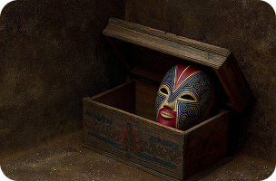
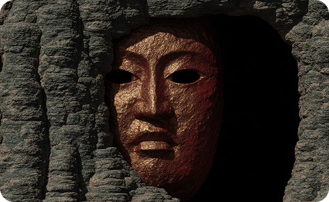
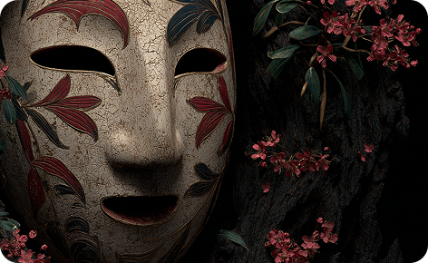

ТЕАТР НО
Злобные насмешливые существа, стремящиеся при каждом удобном случае навредить людям.


Злобные насмешливые существа, стремящиеся при каждом удобном случае навредить людям.

Старинная ритуальная маска, которая использовалась для обрядов, как врата в мир духов. Во время священной мистерии маг сливался с духом маски обряда, становясь единым с её сущностью.

Призрак умершего человека в японской мифологии. Отличительной особенностью классического юрэй является отсутствие ног, хотя в современном восприятии привидения могут быть и с ногами.
Японские ласки, называемые итати, обладают особой магией, которая позволяет им морочить людей.